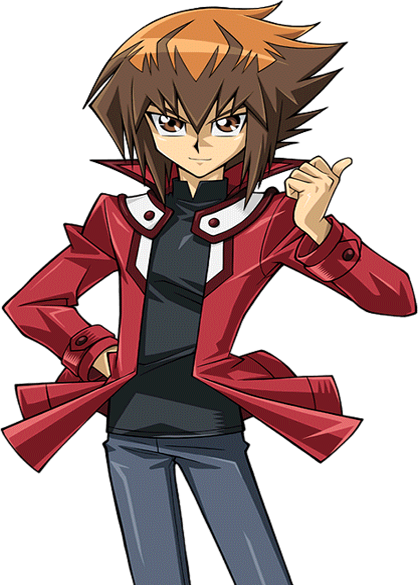

Jaden Yuki es un duelista bastante obstinado y talentoso, además de amante de la diversión y un
talentoso duelista que ama los duelos tanto como a sus amigos. Asistió a la prestigiosa Academia de Duelos
y estuvo en el dormitorio Slifer Rojo, el dormitorio de rango más bajo, debido a sus pobres
resultados en el examen de ingreso. A medida que pasa el tiempo, se convierte en el mejor duelista de la
Academia y salva al mundo y a la Academia de muchas amenazas.
Su vestimenta usual consiste en el uniforme normal de Slifer Rojo, con una chaqueta roja abierta y una
camiseta negra debajo. Su cabello castaño se divide en dos capas, la capa cercana a su rostro tiene un
tono más oscuro que la capa interior. Sus ojos marrones están ubicados directamente bajo los flequillos
de la capa cercana a su cara. Lleva una versión de un Disco de Duelo académico en su brazo
izquierdo.
Jaden ama los duelos y resuelve la mayoría de sus problemas a través de ellos. Él sigue adelante sin
importar lo duras que las cosas se pongan o lo desesperante que parezca la situación, con algunas
excepciones (aunque no hace falta mucho ánimo para que empiece a combatir de nuevo), aunque lo hace a
veces dudar de sí mismo. Siempre muestra respeto hacia sus adversarios, con pocas excepciones, incluso
felicitándolos durante un duelo. Aparte de los duelos, también le encanta comer. A menudo puede ser
ignorante e ingenuo.
Jaden tiene un estrecho vínculo con sus cartas. Su habilidad para ver y escuchar a los Espíritus del Duelo
de Monstruos también típicamente resulta en él trabando amistad con sus cartas. Jaden no tolera que
insulten a sus cartas, aunque él no tiene problemas cuando sus adversarios lo insultan. Parte de
este vínculo con sus cartas se origina cuando gana el mazo de monstruos "Héroe Neo Espacial",
lleno de cartas que él mismo hizo. Jaden es extremadamente leal a sus amigos, y con frecuencia
termina por poner en riesgo su vida por ellos, porque los villanos de la serie casi siempre los amenazan de
alguna manera.
Aún así, esto no le impide usar sus instintos a la hora de luchar y su mazo de "Héroes
Elementales" est´listo para dar la talla. Su monstruo favorito, el "Héroe Elemental Neos",
aumenta sus habilidades para fusionarlo con otros monstruos, además de hablar con los espíritus que
habitan dentro de sus cartas.